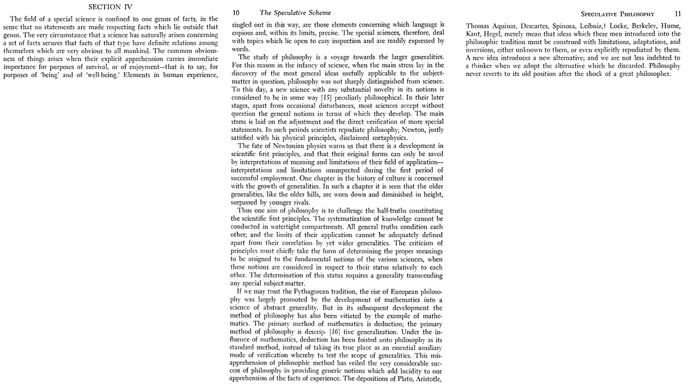

|  |
| Commentary |
|---|
Aim:
|
| Philosophy and Sciences |
|
A special science deals with one genus of facts. It does not make any statements/claims about those facts which lie outside such a genus. Consider physics which is concerned with the nature of energy and matter; biology that investigates living beings; chemistry that examines nature of chemical reactions; astronomy which deals with celestial bodies and so on. Physics does not make (direct) claims about living beings and chemistry does not make (direct) claims about celestial bodies.¹ Today, there are interdisciplines like astrochemistry, biotechnology, biophysics, astrophysics and others. Each continues to be concerned with a set of facts about our world and confines to making well-supported claims about it. The birth of a special science is preceded by the acknowledgement of the phenomena that it seeks to explain: in ancient Greece, philosophers sought to explain natural phenomena (light, rain, the origin of universe and others) and consequently, a multitude of branches gradually arose confined to specific aspects of the natural phenomena. Such phenomena were obvious, in the sense that, they were clearly observed states of affairs which we sought to explain. Our attention is directed towards phenomenon and their relations with each other when our survival (being) and our enjoyment (well-being) is signified by it. Owing to the clarity of observation of these phenomena, language is well-endowed- it has the ability to talk about it and discuss it, within certain limits, in precise terms. In this sense, special sciences are concerned with those topics which are easy to inspect and can be expressed with words readily. Philosophy, on the other hand, is concerned with larger generalities. Initially, during the birth of a special science, it is indistinguishable from philosophy. This is because the main concern during the infancy of a special science is to find the most general ideas about the subject-matter. Any new science which has novelty is in some way philosophical, owing to its generality. Once a spcial science begins its life as a separate domain, the initially developed general notions are majorly accepted. There are exceptions of occasional disturbances. The general notions are affected only through adjusting and directly verifying their details or technicalities. During this time of adjustment and verification, the special science often distances itself from philosophy. A case in point is Newton who discarded metaphysics, in the satisfaction of his physical principles. As a special science develops, the general notions, which are the scientific first principles undergo verification. Eventually, they can only be retained in their original form when their meaning is interpreted within a limited field of application. Such confinement is often not foreseen during the initial success of the first principles. The birth and development of science is the arising of scientific first principles which embody its general notions and are consequently, questioned in the face of verification and are limited in their scope ultimately. Apart from developing the generalities, philosophy also questions the scientific first principles. "The systematization of knowledge cannot be conducted in watertight compartments." As wider generalities are discovered, the preceding generalities are limited in their application. In this way, when we criticise a former principle, it should take the form of identifying its proper meaning and the scope of its application. Ultimately, we can determine the fundamental notions of different sciences in light of a generality that transcends any special subject-matter (such larger generalities are discovered and examined by philosophy). |
| Difference in Methods of Philosophy and Mathematics |
| European philosophy grew gradually through the development of mathematics. Philosophy became a "science of abstract generality" steadily. However, philosophy has also been pulled back due to its blind following of the example of mathematics. Mathematics follows the method of deduction while philosophy practices descriptive generalization. The method of deduction has been forced upon philosophy as its standard method due to influence of mathematics. The place of mathematics in philosophy is as an "essential auxiliary mode of verification" which allows the testing of scope of generalities. Due to the mistaking of its method, philosphy has failed to recognize the success of its generic notions which enable us to look at the facts of experience more clearly. Plato, Aristotle, Thomas Aquinas, Descartes, Spinoza, Leibniz, Locke, Berkeley, Hume, Kant and Hegel amongst others were challenged and met with staunch criticism of their systems ("depositions"). The right way to look at it is to identify the "limitations, adaptations and inversions" of their ideas. While a newly introduced idea provides an alternative, it does not negate the success of previous ideas. |